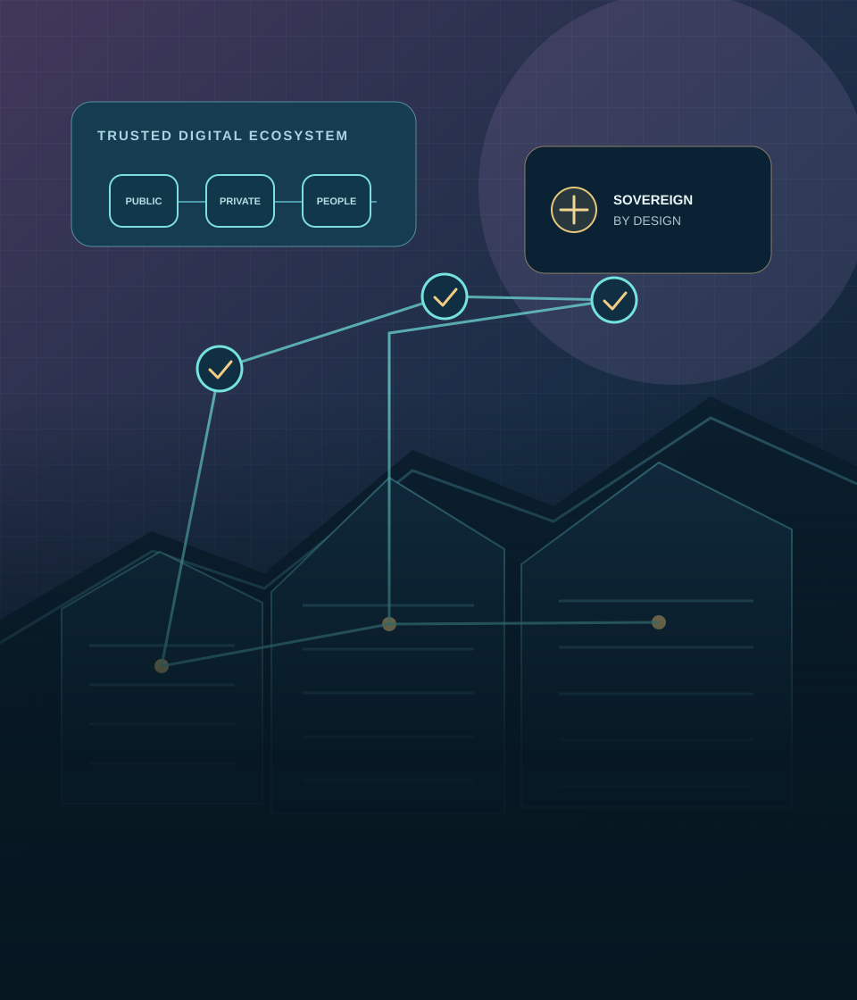

Focus Area 03 · Research Topic 02
Data Sovereignty
Examine who can govern, access and protect data across borders, cloud platforms and competing legal systems.

Overview
Data sovereignty concerns the authority and practical capacity to govern data under applicable laws and institutional choices. It encompasses jurisdiction over data, the location and control of infrastructure, the ability to enforce safeguards and the terms under which information moves between organisations and countries.
Data residency describes where data is stored or processed; it is one factor in sovereignty, not a complete substitute for questions about who controls a service, which laws may apply, who holds encryption keys and how a customer can move or recover its information.
Key research areas
- Cross-border transfers, transfer safeguards and international data flows.
- Jurisdictional reach, access requests and conflicts between legal requirements.
- Data residency choices compared with operational control and enforceable rights.
- Cloud concentration, portability, interoperability and strategic dependencies.
- Economic and geopolitical effects of localisation and digital-sovereignty policies.
Challenges and risks
Organisations may face overlapping obligations in several jurisdictions. A local data centre alone may not resolve questions of provider control or lawful access. Strict localisation can increase costs, reduce service options or complicate resilience planning, while dependence on a small number of foreign suppliers can create continuity and bargaining risks. Assessments must distinguish evidence-based risks from broad claims about national control.
Legal and regulatory dimensions
Applicable rules depend on the data, parties and jurisdictions involved. India’s Digital Personal Data Protection Act, 2023 provides a domestic framework for digital personal data processing, while the Information Technology Act, 2000 and relevant rules may also matter. Contract terms, sectoral requirements and the laws of countries where providers operate can affect transfers and access. This page is informational, not legal advice; current requirements should be checked for each use case.
Practical applications
Public institutions can map data flows, assess service-provider jurisdictions, identify exit and recovery options, and set transparent procurement requirements. Businesses can compare residency commitments with actual control, portability and incident arrangements. Policymakers can evaluate whether a proposed localisation measure addresses a defined risk and consider its effects on rights, competition and essential services.
Research questions
- How do residency, provider control and jurisdiction interact in public cloud procurement?
- Which safeguards support lawful and reliable cross-border data exchanges?
- How can institutions reduce strategic technology dependencies without undermining resilience?
- What evidence should inform the design and evaluation of data-localisation policies?
Related research areas
Continue exploring
Study data flows with legal and technical context.
Explore related work or contact the Unit to discuss a research enquiry.